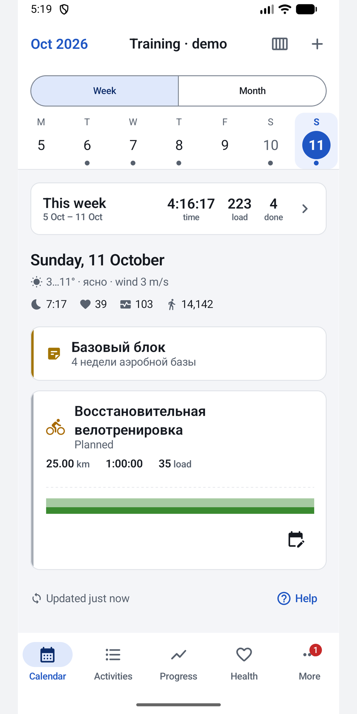
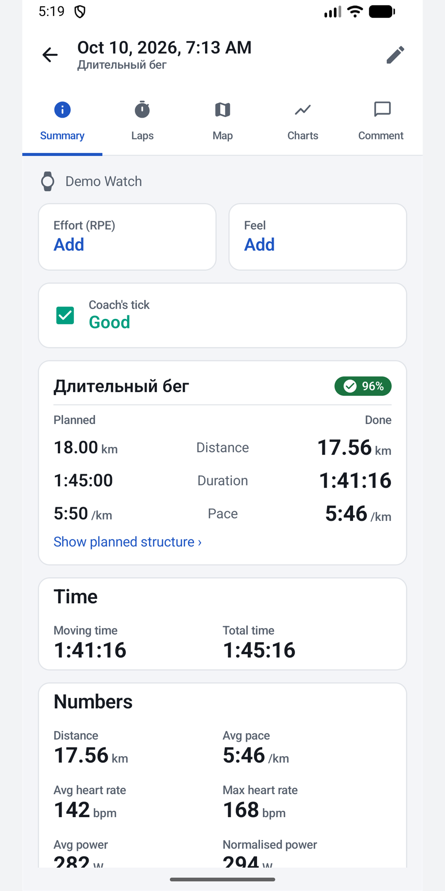
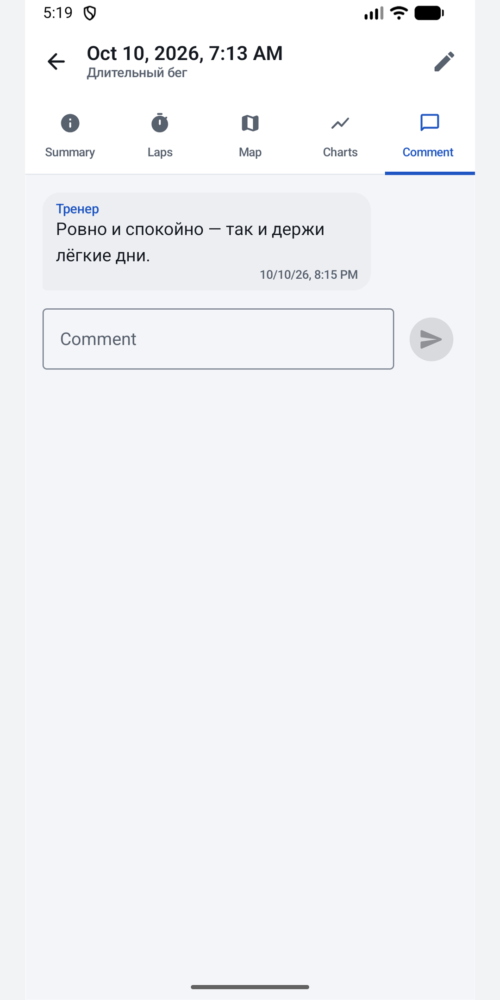
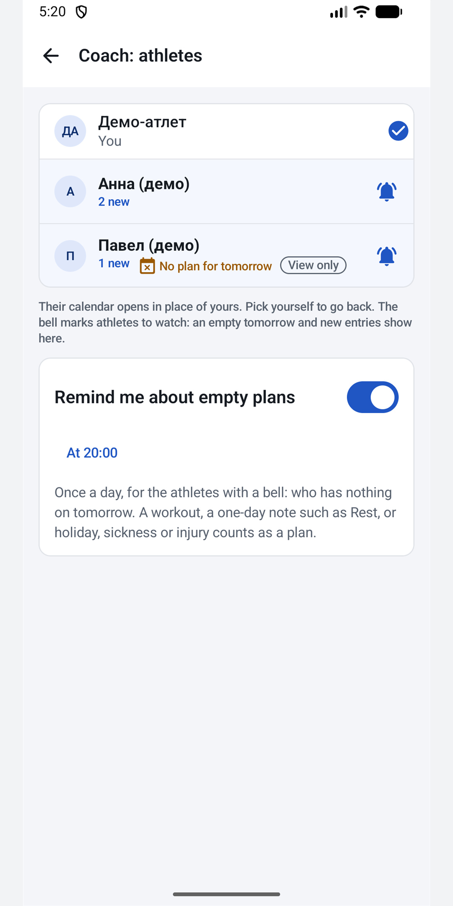
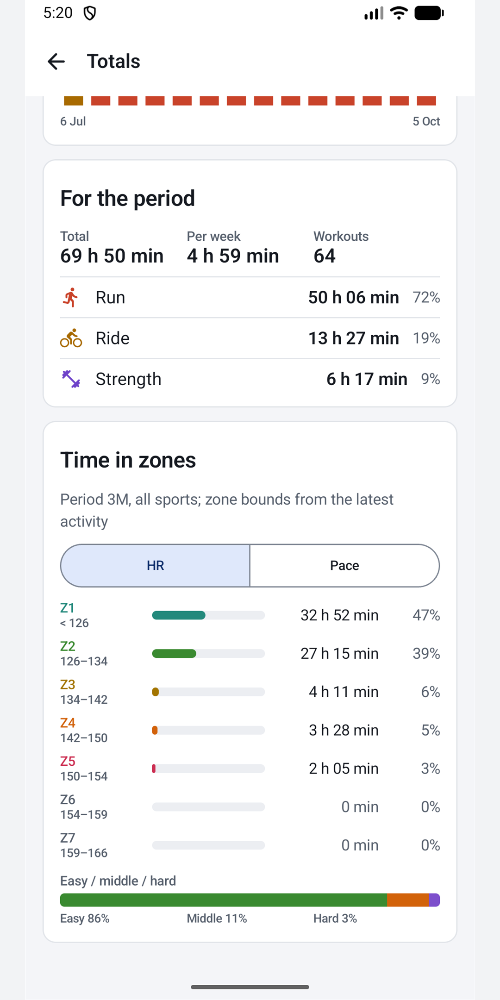

Your intervals.icu training on Android.
The plan, your workouts and your coach in one app. It opens on today, keeps working with no signal, and sends your edits back to intervals.icu.
Download the APKHow to installPrivacy · Free. No ads. Weekform is independent and is not made by intervals.icu.

Training apps should not leave you guessing
"Where is my workout?"
Missing workouts are the most common complaint about apps in this space. Weekform says when it last synced, and explains in one tap what to check.
Spinners and crashes
Weekform keeps your week on the phone, so it opens at once and syncs behind the scenes. Edits made with no signal go out later.
Android, natively
Not a web page in a wrapper: widgets, notifications, dark theme, offline edits, built for Android.
How it works
- In intervals.icu, open Settings and copy your API key.
- Paste it into Weekform. It stays encrypted on your phone and is sent only to intervals.icu.
- Your week opens on today. Plan, log and comment; it all goes back to intervals.icu.




Made for training with a coach
Comments that reach you
A notification opens the right thread. Edit or delete your own messages.
RPE, Feel and a note up front
A reminder to rate the workout arrives a while after it syncs, not while you are still on the way home.
The coach's mark
See it on every card. Coaches set it in one tap.
For coaches
A bell on athletes you follow: who has nothing planned for tomorrow, who added something new.
Everything else you expect
Calendar
Week and month, plan versus done, drag to move, compliance colours with a legend.
Workouts
Build structured sessions, plan from your library, mark a gym session done.
Analysis
Charts, laps, km splits, map, time in zones over any period, fitness and form.
Wellness and widgets
Sleep, HRV, resting HR and how you feel; widgets for today and your form.
Price
Free, with no ads and no account of ours. If it helps your training, you can support the author in the app.
Questions
Is Weekform made by intervals.icu?
No. It is an independent app that uses the public intervals.icu API with your own account.
Is there an iPhone version?
Not now. Weekform is built for Android.
My Strava workouts do not show up.
Strava does not let intervals.icu pass activities on to other apps. Connect your watch (Garmin, COROS, Polar, Suunto…) to intervals.icu directly.
Where is my data?
On your phone and on intervals.icu. Weekform has no server of its own and does not collect analytics. See Privacy.
I coach. Does it work for me?
Yes. Switch to any athlete who added you as their coach, plan, comment and set your mark.
How do I install it without a store?
Download the APK from GitHub releases and open it. Android asks once to allow installs from your browser or file manager; Play Protect may warn about an unknown developer, which is normal for apps outside a store. Updates: the app checks GitHub once a day, tells you, and installs the new version when you tap Update; or add the repository to Obtainium.
Does it cost anything?
No.
Open your week
Weekform is published as an APK on GitHub releases. Download the latest one and install it; the app tells you when a new version is out.
Download the APK